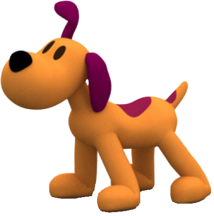
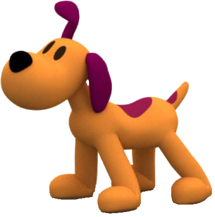
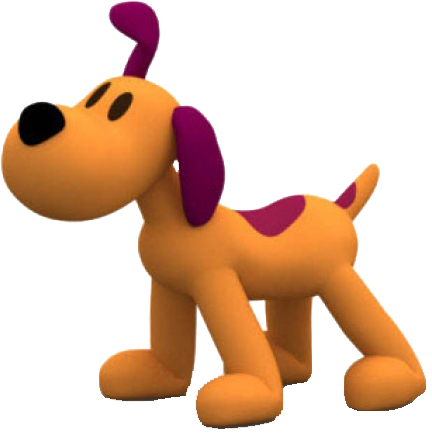

Pocoyo e seus amigos
Os personagens são: Pocoyo (menino de 3 anos), Elly (elefoa rosa), Pato, Loula (cadelinha fofa), Sonequita (passarinho), Soninho (filhote da Sonequita), Lagarta, Baleia, Octopus (polvo malucão) e os aliens.

 


Os personagens são: Pocoyo (menino de 3 anos), Elly (elefoa rosa), Pato, Loula (cadelinha fofa), Sonequita (passarinho), Soninho (filhote da Sonequita), Lagarta, Baleia, Octopus (polvo malucão) e os aliens.
